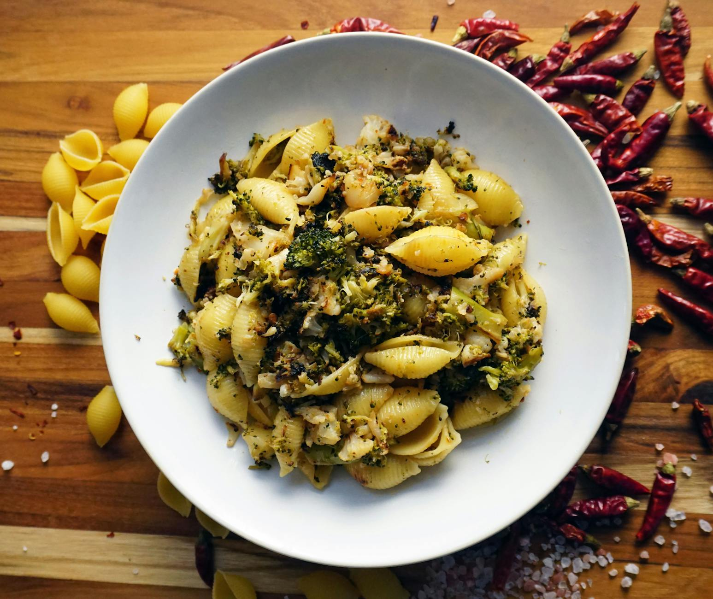

What Foods Lower Inflammation Naturally?
Key takeaways
- Feeling sluggish, achy, or just not quite yourself?
- Chronic inflammation might be playing a role.
- Focus on: Taming the Fire Within: Everyday Foods to Reduce Inflammation.

Taming the Fire Within: Everyday Foods to Reduce Inflammation
Feeling sluggish, achy, or just not quite yourself? Chronic inflammation might be playing a role. While it's a natural process your body uses to heal, persistent inflammation can contribute to various health concerns. The good news? You don't need exotic ingredients or drastic diets to make a difference. Many common, everyday foods are packed with compounds that can help calm that internal fire.
Understanding Inflammation's Role
Inflammation is your body's defense system. Think of it as a fire alarm that goes off when there's an injury or infection. It's crucial for healing. However, when this alarm stays on too long (chronic inflammation), it can start to cause damage. This can show up as joint pain, fatigue, digestive issues, and more. Lifestyle factors, including diet, play a significant role in managing this response.
Your Kitchen's Anti-Inflammatory Arsenal
Let's dive into some powerhouse foods you likely already have or can easily find:
Berries: Nature's Antioxidant Boost
Blueberries, strawberries, raspberries – these small but mighty fruits are loaded with antioxidants called anthocyanins. These compounds are known for their ability to fight inflammation. A handful of berries in your morning oatmeal or yogurt can be a delicious start to your day.
Fatty Fish: Omega-3 Powerhouses
Salmon, mackerel, sardines, and tuna are rich in omega-3 fatty acids, specifically EPA and DHA. These fats are potent anti-inflammatories. Aim to include fatty fish in your diet a couple of times a week. For example, a grilled salmon dinner is a fantastic way to get your omega-3s.
Leafy Greens: More Than Just Salad
Spinach, kale, collard greens, and Swiss chard are packed with vitamins, minerals, and antioxidants like vitamin E and carotenoids. These nutrients help protect your cells from damage and reduce inflammation. Don't just stick to salads; sauté them with garlic or add them to smoothies.
Nuts and Seeds: Tiny but Mighty
Almonds, walnuts, chia seeds, and flaxseeds offer healthy fats, fiber, and antioxidants. Walnuts, in particular, are a good source of omega-3s. Sprinkle them on salads, yogurt, or enjoy a small handful as a snack.
Olive Oil: The Mediterranean Staple
Extra virgin olive oil is a cornerstone of the Mediterranean diet and a fantastic source of monounsaturated fats and antioxidants like oleocanthal, which has anti-inflammatory properties. Use it for cooking, salad dressings, or drizzling over vegetables.
Turmeric and Ginger: Spice Up Your Health
These vibrant spices are well-known for their anti-inflammatory compounds. Turmeric contains curcumin, and ginger has gingerol. Add them to curries, stir-fries, teas, or even smoothies. A simple ginger-turmeric tea can be very soothing.
Putting It All Together: An Actionable Checklist
Ready to start incorporating these foods? Here’s a simple checklist:
- Add a serving of berries to breakfast daily.
- Include fatty fish twice this week.
- Aim for at least two servings of leafy greens daily.
- Snack on a small handful of nuts or seeds.
- Use extra virgin olive oil for cooking and dressings.
- Experiment with adding turmeric and ginger to meals and drinks.
Common Mistakes to Avoid
While focusing on anti-inflammatory foods is great, it's also important to be mindful of what can increase inflammation. Highly processed foods, sugary drinks, excessive red meat, and refined carbohydrates can all contribute to a pro-inflammatory state. Making gradual swaps, like choosing whole grains over refined ones, can make a big difference.
Real-Life Example
Sarah, a busy mom from Ohio, struggled with persistent joint stiffness. She decided to focus on adding more anti-inflammatory foods to her diet without a complete overhaul. She started by swapping her usual sugary cereal for oatmeal topped with blueberries and walnuts. For lunch, she began adding a spinach salad with olive oil dressing. Within a few weeks, she noticed a significant improvement in her stiffness and energy levels. Her simple, consistent changes made a real impact.
Educational only — not medical advice.
More Resources
Looking for more ways to support your well-being? Check out these related articles:
- The Gut-Brain Connection: How Your Stomach Affects Your Mood
- 5 Simple Stretches for Daily Relief
- Mindful Eating: A Guide to Savoring Your Meals
- The Power of Sleep: Why Rest is Crucial for Health
- Stress Management Techniques for a Calmer You
FAQ
Frequently Asked Questions
- How quickly can I expect to see results? Results vary, but many people notice subtle improvements in energy and well-being within a few weeks of consistent dietary changes.
- Can I still eat my favorite foods? Absolutely. The goal is balance, not restriction. Moderation is key. Focus on making anti-inflammatory foods the foundation of your diet.
- Are supplements as effective as food? Whole foods offer a complex matrix of nutrients that work synergistically. While supplements can be helpful, getting these compounds from food is generally preferred.
- What's the difference between acute and chronic inflammation? Acute inflammation is short-term, helping your body heal from injury or infection. Chronic inflammation is long-term and can contribute to health problems.
By incorporating these delicious and accessible foods into your daily routine, you can take proactive steps towards reducing inflammation and supporting your overall health. Small changes can lead to significant improvements over time!
Related posts
What Foods Naturally Lower Body Inflammation?
Discover everyday foods that can help reduce inflammation in your body. Simple dietary changes for a healthier you.
Read more →
Need Dinner Fast? Try These Quick Recipes
Busy weeknights? Discover delicious and fast dinner recipes that take 30 minutes or less, perfect for busy individuals and families.
Read more →
What Is the Ideal Daily Rhythm for Longevity?
Discover the evidence-aligned daily rhythm to boost your longevity. Learn practical tips for better sleep, nutrition, and stress management
Read more →